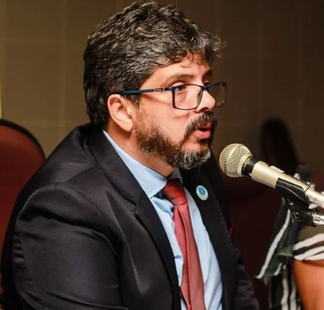

O Conselho Federal de Educadores e Pedagogos é uma ferramenta crucial para todos os profissionais da área
da educação. Através do seu site, é possível ter acesso a várias publicações que são essenciais para o
aprimoramento do trabalho dos pedagogos.
Ao acompanhar as publicações do Conselho, é possível ficar por dentro das últimas novidades e tendências
na área da educação, bem como ter acesso a materiais e recursos que podem ajudar no desenvolvimento de
práticas pedagógicas mais eficazes e inovadoras.
Além disso, o Conselho também é responsável por promover a troca de experiências e o debate entre os
pedagogos, o que contribui para o enriquecimento profissional de todos os envolvidos. Portanto, é
fundamental que todos os pedagogos estejam atentos e acompanhem as publicações do site do Conselho
Federal de Educadores e Pedagogos, a fim de se manterem atualizados e em constante evolução na sua
prática educativa.

Para Dr. Geraldo Paiva, a inteligência artificial tem transformado significativamente a forma como a
educação é estruturada e entregue. Com a introdução de tecnologias avançadas, como sistemas de
aprendizado adaptativo e assistentes virtuais, os educadores podem personalizar o ensino para
atender às necessidades individuais dos alunos.
A inteligência artificial permite que os professores identifiquem áreas específicas em que os alunos
estão com dificuldades e forneçam recursos personalizados para ajudá-los a superar esses desafios.
Além disso, a IA pode analisar grandes conjuntos de dados para identificar tendências e padrões de
aprendizado, permitindo que os educadores ajustem seus métodos de ensino de acordo.
No entanto, salienta que é importante ressaltar que a inteligência artificial não substitui o papel
do professor, mas sim complementa e aprimora a experiência de aprendizado. Os educadores continuam
desempenhando um papel fundamental no desenvolvimento dos alunos, oferecendo orientação e suporte
emocional que não pode ser replicado por máquinas.
A inteligência artificial está revolucionando a forma como a educação é entregue, tornando-a mais
personalizada, acessível e eficaz. A combinação entre tecnologia e ensino tradicional tem o
potencial de otimizar o aprendizado e preparar os alunos para um futuro cada vez mais digital.
E mais, esclarece que se o Educador e Pedagogos não se atualizar muito em breve ficam fora do
mercado de trabalho porque hoje a tecnologia esta muito a frente e avançamos muito nos ultimos anos
e as crianças de hoje são nativos digitais, e isso faz com que eles são detentores de facilidade no
aprendizado através de maquinas, porém, devem estar sempre atentos e atualizados perém sempre
acompanhados de pedagogos preparados.
Já a Dra Fernanda Gimenes, afirma que hoje em dia, os pedagogos estão cada vez mais enfrentando
desafios relacionados às síndromes, espectro autista, TDAH e outras questões neurodiversas. A
neurociência tem desempenhado um papel fundamental no entendimento e na abordagem dessas questões,
fornecendo aos pedagogos ferramentas e conhecimentos para melhor atender às necessidades dos alunos
com essas condições.
Para aprimorar seus conhecimentos em neurociência, os pedagogos devem buscar constantemente
atualizações e práticas baseadas em evidências. Participar de cursos, conferências e workshops sobre
o tema, assim como ler livros e artigos científicos pode ser uma ótima forma de se manter
atualizado.
Além disso, é importante que os pedagogos desenvolvam empatia e compreensão em relação aos alunos
com necessidades atípicas, buscando conhecer suas particularidades e adaptando as práticas
pedagógicas de acordo com as suas necessidades individuais.
Outro aspecto crucial é a colaboração com profissionais de outras áreas, como psicólogos,
neuropiscopedagogos, psicopedagogos,terapeutas ocupacionais e fonoaudiólogos, para garantir uma
abordagem multidisciplinar e integrada no atendimento aos alunos com necessidades especiais.
Afirma ainda a Dra Fernanda, que para enfrentar tais desafios o mais o importante não é somente esse
aprimoramento, mas, importante é a participação ativa da familia para que a detecção seja feita de
maneira completa e para juntos formarem uma convicção e as medidas a serem adotadas.
Para Prof. Dr. Jefferson Dosseau, orienta que para que o profissional Busque se qualificar
constantemente: Invista em cursos, workshops e especializações que possam agregar valor ao seu
currículo e aumentar a sua empregabilidade.
Procure por oportunidades de crescimento: Esteja sempre atento a novas oportunidades de emprego que
possam oferecer uma remuneração mais adequada. Networking e participação em eventos do setor podem
ser úteis nesse sentido.
Caso você sinta que está sendo sub-remunerado, não hesite em negociar agregar valores através de uma
segunda opção de empregabilidade, escreva um livro participe de eventos procure patrocínios para
eventos. Apresente argumentos sólidos baseados em sua experiência e desempenho para justificar a
solicitação quando for tratar de novos empregos mas, nunca perca a esperança de mehorar a cada dia.
Considere complementar sua renda buscando por atividades complementares que possam gerar uma renda
extra, como aulas particulares, consultorias ou pesquisa acadêmica.
Mantenha-se atualizado sobre o mercado de trabalho: Esteja sempre atento às tendências e demandas do
mercado de trabalho na sua área de atuação, isso pode ajudá-lo a identificar oportunidades de
crescimento e planejar sua carreira de forma estratégica.
Para participar de eventos sem onerar seus vencimentos, os pedagogos podem buscar por eventos
gratuitos ou com valores acessíveis, bem como procurar por programas de capacitação oferecidos por
instituições públicas e privadas. Além disso, muitas prefeituras e instituições de ensino oferecem
bolsas de estudo e descontos para cursos de formação continuada, o próprio Conselho Federal de
Educadores e Pedagogos através de Faculdade parceira e, em parceria com Prof. Dr. Jefferson da DRM
Educação, concede acesso a vários cursos inteiramente gratuítos e ou até mesmo com um valor infimo,
que não da nem para um lanche completo, gastando R$20,00 (vinte reais) mês o inscrito pode
participar de várias pós graduações, isso é considerado bonus, pois é apenas o custo de material e
nada paga pelo curso e ainda com certificação da Faculdade com reconhecimento MEC.
Para Prof.Dr. Leopoldino Vieira Neto, os pedagogos desempenham um papel fundamental na sociedade,
sendo responsáveis por orientar e acompanhar o processo de aprendizagem dos alunos. Para se manterem
atualizados e em constante aprimoramento profissional, é essencial que os pedagogos participem de
eventos e cursos de formação.
Participar de eventos como congressos, seminários e workshops é uma excelente forma de estender o
conhecimento e trocar experiências com outros profissionais da área. Nestes eventos, os pedagogos
têm a oportunidade de conhecer novas tendências educacionais, técnicas de ensino inovadoras e
pesquisas recentes na área da educação.
Além disso, a participação em eventos contribui para a formação de uma rede de contatos
profissionais, o que pode ser extremamente útil para troca de informações e oportunidades de
trabalho. Essa troca de experiências pode enriquecer a prática pedagógica e promover a reflexão
sobre as práticas adotadas em sala de aula.
A participação em eventos e cursos de formação é uma ferramenta essencial para que os pedagogos
possam estar sempre atualizados e em constante aprimoramento profissional. Investir em sua formação
é investir na qualidade do ensino e no desenvolvimento dos alunos, e existem diversas formas de
participar de eventos sem comprometer seus vencimentos.